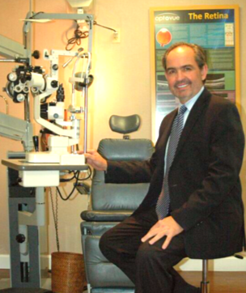

Meet Our Specialists
Board Certified Optometric Physicians, Dr. Moran and Dr. Mauri are trained to diagnose and treat trauma and diseases of the eye as well as provide routine vision care. Their combined over twenty-five years of experience as well as their unfailing attention to their patients input have served as the key elements to the foundation of the Eye Center.
01
Dr. Ramon Moran Jr.
Founder/Senior PartnerDr. Ramon Moran Jr. is the founder and senior partner of the Eye Care Center. A native of Miami, Dr. Moran studied his...Read More

02
Dr. Carlos A. Mauri
PartnerDr. Carlos A. Mauri has been a partner of the Eye Care Center since 1992. Born in Caracas, Venezuela, Dr. Mauri received his...Read More
